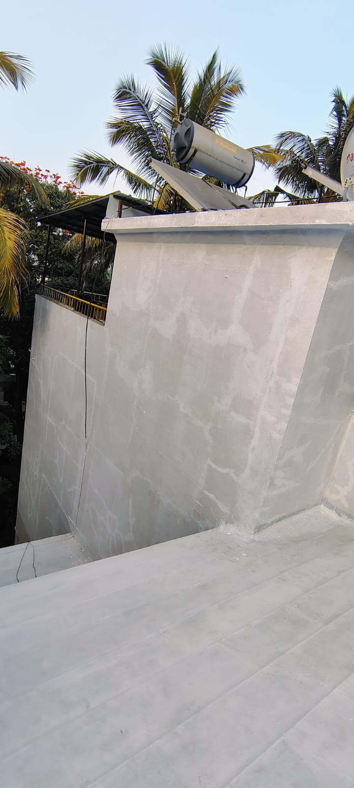
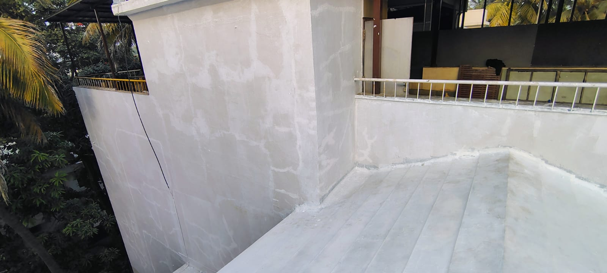
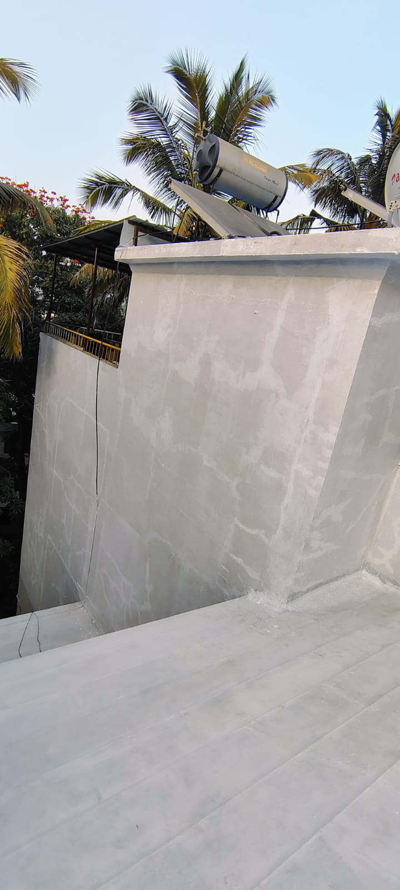
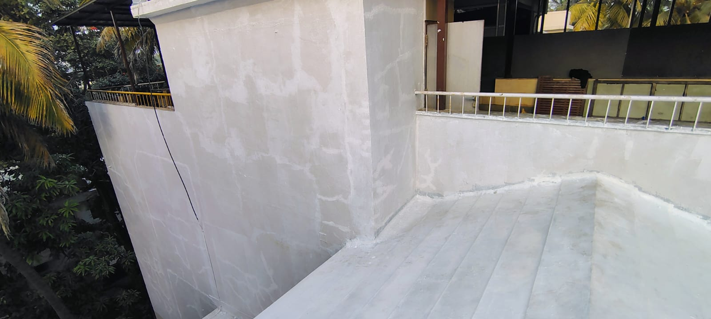

External Wall Waterproofing
Complete rain protection for building exterior walls.
Why External Wall Waterproofing Is Important
External walls directly face rain and weather conditions. Water penetration causes dampness, paint damage, and fungal growth inside.
Materials Used
• Elastomeric waterproof coatings
• Acrylic polymer coatings
• Crack fillers
• UV-resistant top coats
Our 5-Step External Wall Waterproofing Process
Step 1: Wall inspection and crack marking.
Step 2: Surface cleaning.
Step 3: Crack filling and joint sealing.
Step 4: Waterproof coating application.
Step 5: Final curing and inspection.
Project Image Gallery
 




Frequently Asked Questions
1. Does it stop rain leakage?
Yes.
Yes.
2. Paintable finish?
Yes.
Yes.
3. Life?
7–10 years.
7–10 years.
4. Suitable for all buildings?
Yes.
Yes.
5. Maintenance?
Low.
Low.